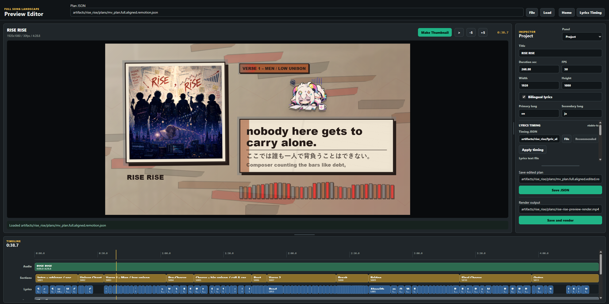
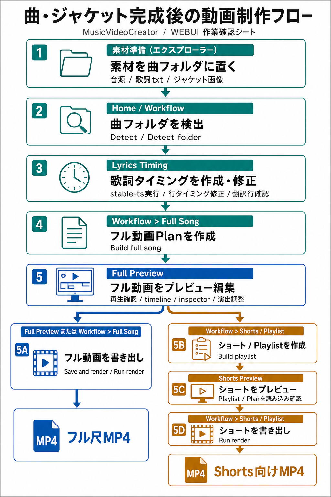
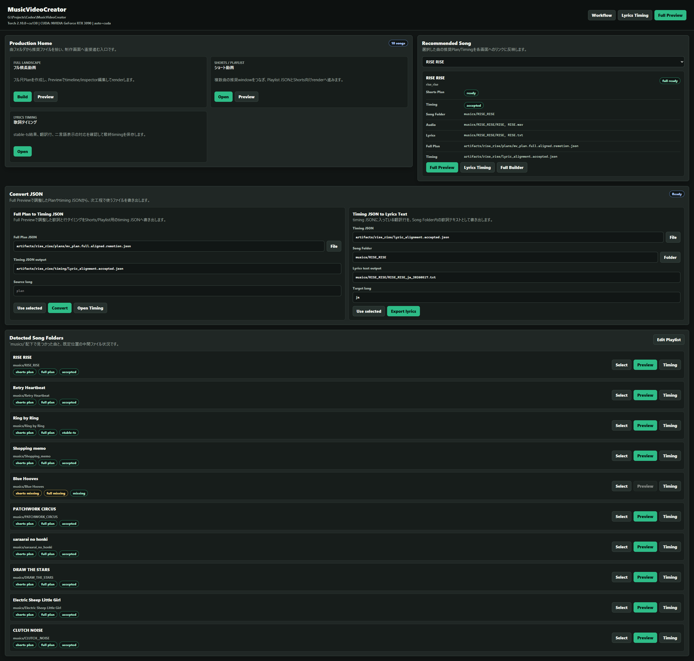
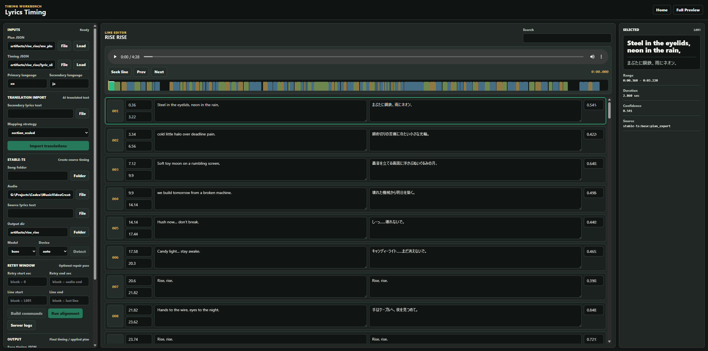
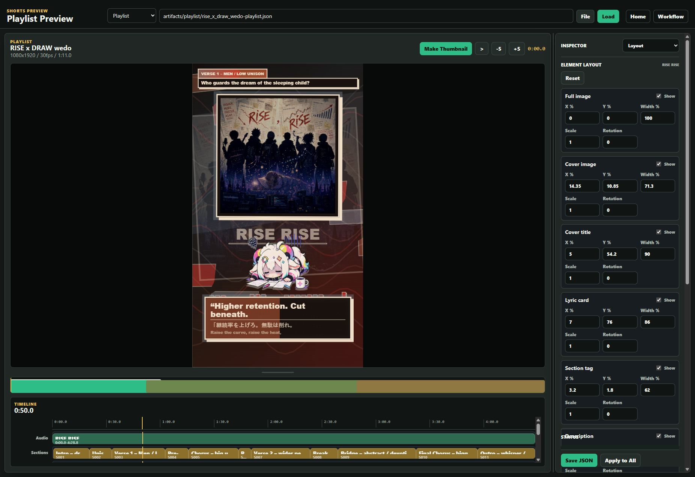

完成動画の自動生成ではなく、制作計画・同期・確認・出力を支援。
MusicVideoCreator
曲フォルダを、MV制作パイプラインに変える。
音源・歌詞・画像素材を検出し、mv_plan*.json に整理して、歌詞タイミング、Shorts候補、Remotionプレビュー/レンダーまでつなぐローカル制作ツールです。

素材検出とレンダーを分け、Remotion-firstで扱う。
同じ制作資産から複数フォーマットを確認。
Motivation
歌詞を、ちゃんと見せたい。

「歌詞にこだわっているのに、音楽のリリースページだと歌詞が見れない……」という悩みがあったので、歌詞動画だけでも手軽に作れるようにしたかった
MusicVideoCreatorの出発点は、完成動画を一発生成することではなく、曲ごとの歌詞・タイミング・見せ方を、公開しやすい形に整えることです。
Example output
コミット量トップ、その作例。
MusicVideoCreatorはこの活動レポート内でも最もコミット量が多い制作プロジェクトです。

曲の見せ方を、歌詞・構図・Shorts候補・背景演出までまとめて調整するための道具です。
Workflow
素材準備からMP4出力まで。
UIとCLIの両方から、曲素材をplan化して確認・出力します。

- 曲フォルダに音源・歌詞・画像素材を置く
- UIまたはCLIで
mv_plan*.jsonを作成 - stable-tsで歌詞タイミングを生成、必要なら部分retry
- Lyrics Timing画面で確認してaccepted timingへ反映
- Shorts / Full / Playlist planへ適用
- Remotion Previewで見た目・タイミング・背景・キャラを調整
- MP4としてレンダー
Screens
実制作で触る画面。

Production Home
曲一覧、推奨曲、JSON変換導線をまとめた制作入口。

Lyrics Timing
英日歌詞、confidence、stable-ts導線、採用済みtimingを確認。

Shorts Preview
縦動画レイアウト、タイムライン、InspectorでShorts候補を調整。
Local preview demo
操作デモはクリック再生。
公開ページでは自動再生せず、必要な人だけ再生できるようにしています。
What it handles
できることを、誇張せずに並べる。
Plan generation
曲フォルダから音源・歌詞・代表画像を自動検出し、制作とレンダーの中心契約にします。
Lyrics timing
stable-ts結果、retry、accepted、二言語歌詞を段階管理します。
Remotion preview
Web技術でPreview Editorとrenderをつなぎ、横長/縦長/playlistを確認します。
Visual layers
ミニキャラ、前面画像/動画、背景テーマ、流れる図形、軽量audio visualizerを扱います。
Release readiness
公開準備は、まだ正直に棚卸し中。
GitHub公開前の監査では、コードの方向性よりもライセンス、同梱資産、配布整合性が主なブロッカーでした。

“完成品質のMV自動生成ツール”ではなく、実制作のための計画・同期・プレビュー・レンダー支援ツールとして紹介するのが正確です。